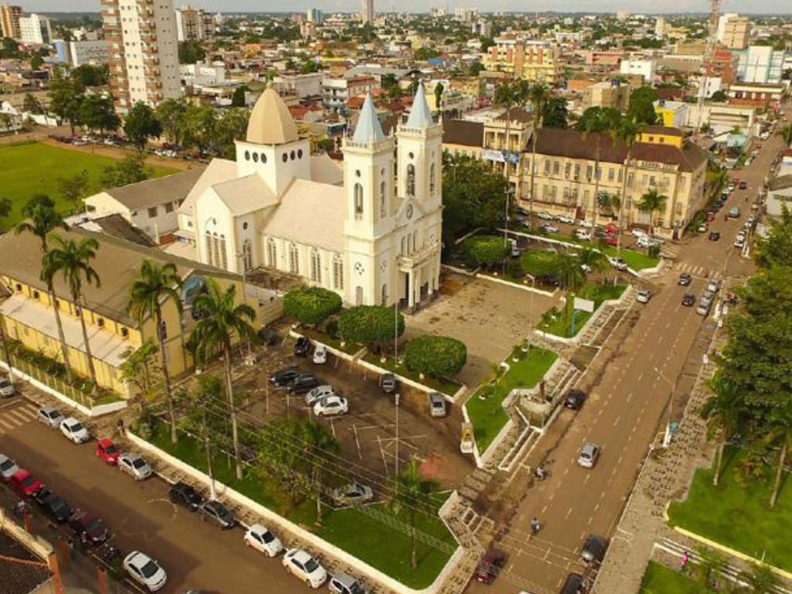

Rondônia é um estado brasileiro da região Norte. É composto por planícies em sua maioria, e consiste atualmente em uma das áreas de expansão da fronteira agrícola brasileira. Rondônia é uma das 27 unidades de federação do Brasil e integra a região Norte. Inserido no bioma Amazônia, o clima do estado é o Equatorial Quente e Úmido. Sua cobertura vegetal é composta por florestas e encontra-se, em algumas áreas, espécies de Cerrado.

Voltar